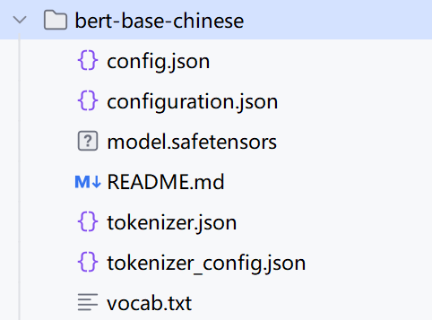
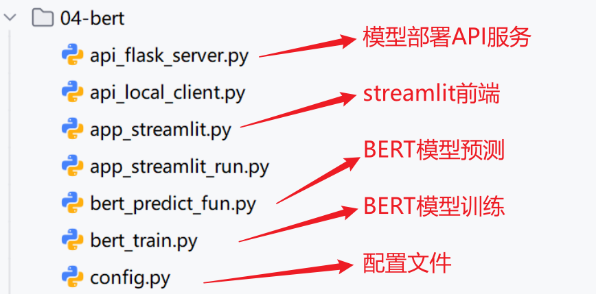
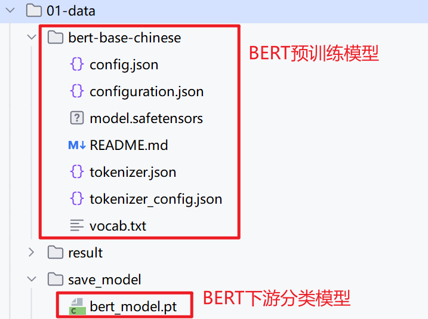
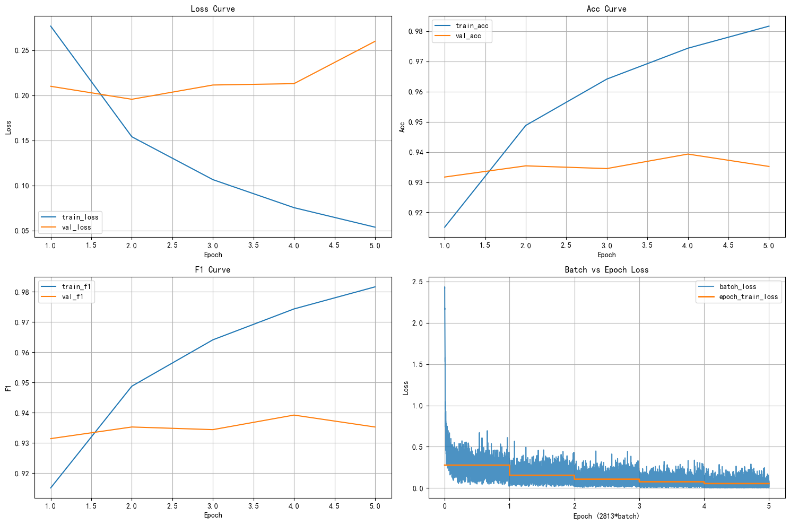

1 预训练Bert的下游微调
学习目标：
1.完成数据集的读取及预处理
2.理解dataSet、dataloader与collate_fn关系
3.完成Bert微调模型的构建
4.完成Bert微调模型的训练与测试
5.完成Bert微调模型的预测以及部署
1.1 bert模型下载
使用bert-base-chinese，bert下载: - huggingface: https://huggingface.co/bert-base-chinese - hf-mirror: https://hf-mirror.com/google-bert/bert-base-chinese
Shell
git clone https://hf-mirror.com/google-bert/bert-base-chinese project/03-笔记
- modelscope: https://www.modelscope.cn/models/tiansz/bert-base-chinese/files
Shell
git clone https://www.modelscope.cn/tiansz/bert-base-chinese.git project/03-笔记

1.2 代码结构图


基于Bert进行分类建模思路： 1. 创建一个配置文件config.py，管理数据路径、模型路径、超参数等。
-
构建模型训练脚本bert_train.py,实现基于预训练BERT进行下游分类微调的完整工作流：
NLP中神经网络训练的工作流：
1.构建词表 由bert_tokenizer自带的 2.准备数据集 拆分为训练集、验证集、测试集 张量 -> 数据集对象 -> 数据加载器 3.搭建神经网络模型 预训练BERT pooler_output句子表示 线性分类头nn.Linear 4.模型训练 1.前向传播 2.计算损失 3.梯度清零 4.反向传播 5.更新参数 5.模型测试 -
构建模型预测脚本
-
构建模型部署API、streamlit 脚本
1.3 代码实现
1 config配置文件
Python
""" 配置文件，统一管理全局配置信息，包括数据路径、类别信息等。方便项目的管理和后期维护。 """ import torch import os # 文件操作模块 from pathlib import Path # 路径操作模块 # 不显示警告信息 import warnings warnings.filterwarnings("ignore") # 1.定义配置类，集中管理全局配置信息，比如数据路径、类别信息 class Config(): # 1.定义__init__方法，初始化配置项 def __init__(self): # 1.初始化根路径 # self.root_path = os.path.join(Path(__file__).parent.parent, "01-data") self.root_path = r"project/01-data" # 2.初始化数据文件路径 self.train_path = os.path.join(self.root_path, "train.txt") self.dev_path = os.path.join(self.root_path, "dev.txt") self.test_path = os.path.join(self.root_path, "test.txt") # 停用词文件路径 self.stopwords_path = os.path.join(self.root_path, "stopwords.txt") # 3.初始化类别文件路径 self.class_path = os.path.join(self.root_path, "class.txt") # 4.初始化 处理后的数据文件路径 self.process_train_path = os.path.join(self.root_path, "process_train.csv") self.process_dev_path = os.path.join(self.root_path, "process_dev.csv") self.process_test_path = os.path.join(self.root_path, "process_test.csv") # 添加按字符分词的数据文件路径 self.char_train_path = os.path.join(self.root_path, "char_train.txt") self.char_dev_path = os.path.join(self.root_path, "char_dev.txt") self.char_test_path = os.path.join(self.root_path, "char_test.txt") # 添加按词分词的数据文件路径 self.word_train_path = os.path.join(self.root_path, "word_train.txt") self.word_dev_path = os.path.join(self.root_path, "word_dev.txt") self.word_test_path = os.path.join(self.root_path, "word_test.txt") # 5.模型保存路径 os.makedirs(os.path.join(self.root_path, "save_model"), exist_ok=True) # pkl格式，用于保存sklearn机器学习模型 self.rf_model_path = os.path.join(self.root_path, "save_model", "rf_model.pkl") self.tfidf_model_path = os.path.join(self.root_path, "save_model", "tfidf_model.pkl") self.ft_model_path = os.path.join(self.root_path, "save_model", "ft_model.bin") # 6.模型预测结果路径，txt os.makedirs(os.path.join(self.root_path, "result"), exist_ok=True) self.model_predict_result = os.path.join(self.root_path, "result", "model_predict_result.txt") # 7.API配置 self.api_host = "127.0.0.1" # 本地地址 self.api_port = 5000 # 端口号 # 8.类别索引-名称的映射字典 with open(self.class_path, 'r', encoding='utf-8') as f: # 1.使用for循环遍历行，去掉空格和空白, 内存占用小 class_list = [line.strip() for line in f if line.strip()] # 2.直接使用f.read().split()来一次性获取所有行，内存占用大 # class_list = f.read().split() self.id2class = {i: class_name for i, class_name in enumerate(class_list)} # 9.预训练BERT模型路径 self.bert_path = os.path.join(self.root_path, "bert-base-chinese") # 10.BERT下游微调模型的保存路径，模型权重文件格式为.pt/.pth 格式 self.bert_model_path = os.path.join(self.root_path, "save_model", "bert_model.pt") # 11.全局配置和超参数 # 设置设备，优先级：cuda > mps > cpu self.device = torch.device( "cuda" if torch.cuda.is_available() else "mps" if torch.backends.mps.is_available() else "cpu") # 超参数：训练前设置的参数，训练过程中不能学习的参数 self.epochs = 5 # BERT下游微调的常用训练轮数 self.batch_size = 64 self.max_length = 32 self.lr = 2e-5 # BERT的微调学习率,一般为2e-5~5e-5 # 神经网络训练中常用的L2正则化方法是如何实现的 self.weight_decay = 1e-3 # 2.测试 if __name__ == "__main__": # 1.创建配置对象 config = Config() # 2.打印配置信息，验证是否正确加载 print("根路径:", config.root_path) print("训练数据路径:", config.train_path) print("验证数据路径:", config.dev_path) print("测试数据路径:", config.test_path) print("停用词文件路径:", config.stopwords_path) print("类别文件路径:", config.class_path) print(f"处理后的训练数据路径: {config.process_train_path}") print(f"服务器地址: api_host: {config.api_host} | " f"端口号:{config.api_port}") print(f"类别索引-名称的映射字典: {config.id2class}") print(f"预训练BERT模型路径: {config.bert_path}") print(f"设备: {config.device}") print(f"epochs: {config.epochs}")
根路径: project/01-data
训练数据路径: project/01-data\train.txt
验证数据路径: project/01-data\dev.txt
测试数据路径: project/01-data\test.txt
停用词文件路径: project/01-data\stopwords.txt
类别文件路径: project/01-data\class.txt
处理后的训练数据路径: project/01-data\process_train.csv
服务器地址: api_host: 127.0.0.1 | 端口号:5000
类别索引-名称的映射字典: {0: 'finance', 1: 'realty', 2: 'stocks', 3: 'education', 4: 'science', 5: 'society', 6: 'politics', 7: 'sports', 8: 'game', 9: 'entertainment'}
预训练BERT模型路径: project/01-data\bert-base-chinese
设备: cuda
epochs: 5
2 bert_train模型训练
Python
""" 演示 基于预训练BERT的下游文本分类微调的流程 NLP中神经网络训练的工作流： 1.构建词表/加载分词器 由bert_tokenizer自带的 2.准备数据集 拆分为训练集、验证集、测试集 构造样本的输入输出 张量 -> 数据集对象 -> 数据加载器 3.搭建神经网络模型 预训练BERT，输出hidden_state(表示token语义),pooler_output(池化输出,整个句子的语义表示) pooler_output句子表示 线性层nn.Linear 4.模型训练 - 训练集 + 验证集 1.前向传播 2.计算损失 3.梯度清零 4.反向传播 5.更新参数 5.模型测试 1.前向传播 2.计算损失 # 3.梯度清零 # 4.反向传播 # 5.更新参数 """ # 导包 import os os.environ["TF_ENABLE_ONEDNN_OPTS"] = "0" from tqdm import tqdm # 可视化训练过程 import torch # pytorch框架 import torch.nn as nn # 神经网络模块 import torch.optim as optim # 优化器模块，提供各种优化器，比如SGD,Adam,AdamW from torch.utils.data import Dataset, DataLoader from transformers import BertModel, BertTokenizer, BertConfig # huggingface的transformers框架的具体模型方法 # from config import Config # 自定义的全局配置类 import time # 计算 accuracy准确率 和 F1(精确率和召回率的调和平均) from sklearn.metrics import accuracy_score, f1_score import matplotlib.pyplot as plt # 绘图 # 设置中文字体 plt.rcParams['font.sans-serif'] = ['SimHei'] # 微软雅黑 plt.rcParams['axes.unicode_minus'] = False # 解决负号显示问题 # 0.全局配置 # 创建Config()实例 config = Config() # 创建BERT模型对象，分词器对象，配置对象 bert_tokenizer = BertTokenizer.from_pretrained(config.bert_path) bert_config = BertConfig.from_pretrained(config.bert_path) # 1.构建词表 # 由bert_tokenizer自带的 # print(bert_tokenizer.vocab) # print(len(bert_tokenizer.vocab)) # print(bert_tokenizer.tokenize("从前有一份真挚的爱情放在我的面前")) # print(bert_tokenizer.convert_tokens_to_ids(bert_tokenizer.tokenize("从前有一份真挚的爱情放在我的面前"))) # 2.准备数据集 # 2.1 定义函数，加载数据，返回 文本-标签索引 的元组列表 def load_raw_data(file_path): """ 加载数据文件，返回 文本-标签索引的元组列表 :param file_path:原始文件路径 :return: 元组列表，[(状元心经：考前一周重点是回顾和整理,3),(美股评论：SUN的苦涩曙光,2),...] """ # 1.初始化结果列表 results = [] # 2.加载源文件，并处理 with open(file_path, 'r', encoding='utf-8') as f: # 1.遍历行，获取每行 for line in f: # 2.去除首尾空白 line = line.strip() # 3.跳过空行, None, "" if not line: continue # 4.分割文本和标签，\t text, label = line.split('\t') # 5.添加结果到结果列表中 results.append((text, int(label))) # 3.返回结果 return results # 2.2 自定义数据集类，构造输入输出 class MyDataset(Dataset): # 1.初始化方法 def __init__(self, data_list): # 1.初始化父类成员 super().__init__() # 2.初始化数据列表 self.data_list = data_list # 2.len方法，返回数据集大小 def __len__(self): return len(self.data_list) # 3.getitem方法，返回指定索引的样本，输入-输出 def __getitem__(self, index): text, label = self.data_list[index] return text, label # 2.3 定义整理函数，批量处理数据，进行分词器编码 def collate_fn(batch): """ 对一个batch的样本进行BERT分词器编码： 文本 -> 分词 -> padding -> tensor: input_ids, attention_mask, token_type_ids(句子id，这里不需要) :param batch: 一个批次的样本, 长度batch_size, [(text,label),(text,label),...] :return: 元组, (input_ids, attention_mask, labels) input_ids: (batch_size, max_length), token的id attention_mask: (batch_size, max_length)，注意力掩码 labels: (batch_size,),标签 """ # 1.获取文本和标签的元组 texts, labels = zip(*batch) # 2.BERT分词器编码 output = bert_tokenizer( list(texts), # 输入文本列表 padding=True, # 填充, 按照batch内最大长度进行填充 truncation=True, # 截断，阶段超出最大长度max_length的文本 max_length=config.max_length, # 最大长度 return_tensors='pt', # 返回张量 ) # 3.获取张量 input_ids = output['input_ids'] attention_mask = output['attention_mask'] # print(input_ids.shape) # print(attention_mask.shape) labels = torch.tensor(labels,dtype=torch.long) # 4.返回 return input_ids, attention_mask, labels # 2.4 构建数据加载器 def build_dataloader(): # 张量 -> 数据集对象 -> 数据加载器 # 1.加载源数据 train_data = load_raw_data(config.train_path) dev_data = load_raw_data(config.dev_path) test_data = load_raw_data(config.test_path) # 2.构建数据集对象 train_dataset = MyDataset(train_data) dev_dataset = MyDataset(dev_data) test_dataset = MyDataset(test_data) # 3.构建数据加载器对象 train_dataloader = DataLoader( train_dataset, batch_size=config.batch_size, shuffle=True, collate_fn=collate_fn # 批量处理数据 ) dev_dataloader = DataLoader( dev_dataset, batch_size=config.batch_size, shuffle=False, collate_fn=collate_fn ) test_dataloader = DataLoader( test_dataset, batch_size=config.batch_size, shuffle=False, collate_fn=collate_fn ) # 4.返回结果 return train_dataloader, dev_dataloader, test_dataloader # 3.搭建神经网络模型 # 基于预训练的BERT模型实现下游分类模型 class MyBertClassifier(nn.Module): # 1.初始化方法，定义网络层 def __init__(self): super().__init__() # 1.初始化预训练BERT self.bert = BertModel.from_pretrained(config.bert_path) # 2.初始化线性分类头，输入维度hidden_size, 输出维度num_classes self.linear1 = nn.Linear(bert_config.hidden_size, len(config.id2class)) # 3.可选：冻结bert层参数，在训练开始时冻结，训练中期解冻 # for param in self.bert.parameters(): # param.requires_grad = False # 2.forward方法，实现前向传播 def forward(self, input_ids, attention_mask): """ 根据传入的input_ids, attention_mask，前向传播返回预测logits :param input_ids: 输入文本分词之后的token id,(batch_size, max_length) :param attention_mask: 输入文本的注意力掩码，填充掩码，(batch_size, max_length) :return: logits预测分数(batch_size, num_classes) """ # 1.把输入input_ids和attention_mask传入BERT模型，获取输出 output = self.bert( input_ids=input_ids, attention_mask=attention_mask, ) # 2.获取pooler_output，句子级表示 pooler_output = output.pooler_output # (batch_size, hidden_size) # 3.传入线性分类头，获取预测分数logits logits = self.linear1(pooler_output) # (batch_size, num_classes) return logits # 4.模型训练 # 4.1 训练一个轮次 def train_one_epoch(model, train_dataloader, loss_fn, optimizer): # 1.设置训练模式 model.train() # 告诉模型现在是训练模式，要开启dropout等特殊网络层 # 2.初始化 总损失，总样本数，预测结果列表，真实标签列表 total_loss = 0.0 total_samples = 0 total_preds = [] total_labels = [] batch_losses = [] # 记录每个batch的平均损失 # 3.遍历数据加载器 for batch in tqdm(train_dataloader, desc="Training"): # 0.迁移数据到设备 input_ids, attention_mask, labels = [x.to(config.device) for x in batch] # 1.前向传播 logits = model(input_ids, attention_mask) # (batch_size, num_classes) # 2.计算损失 loss = loss_fn(logits, labels) # 3.梯度清零 optimizer.zero_grad() # 4.反向传播 loss.backward() # 5.更新参数 optimizer.step() # 6.记录结果 total_loss += loss.item()*labels.shape[0] total_samples += labels.shape[0] y_pred_class = logits.argmax(dim=-1).cpu().tolist() # (batch_size,) total_preds.extend(y_pred_class) total_labels.extend(labels.cpu().tolist()) batch_losses.append(loss.item()) # 4.计算训练过程指标，平均损失、准确率、F1(macro)分数 avg_loss = total_loss / total_samples avg_acc = accuracy_score(total_labels, total_preds) # macro宏平均：统计所有类别的F1分数，然后求平均，类别平等，不考虑类别样本不均衡，也就小类别和大类别的权重一样； # micro微平均：统计所有样本的预测结果，然后求指标，样本平均，考虑类别样本不均衡，大类别的权重大； avg_f1 = f1_score(total_labels, total_preds, average='macro') # 5.返回计算结果 return avg_loss, avg_acc, avg_f1, batch_losses # 4.2 模型评估 @torch.no_grad() # 关闭梯度计算，节省20%的显存 def evaluate(model, val_dataloader, loss_fn): # 1.设置评估模式 model.eval() # 告诉模型现在是评估模式，要关闭dropout等特殊网络层 # 2.初始化 总损失，总样本数，预测结果列表，真实标签列表 total_loss = 0.0 total_samples = 0 total_preds = [] total_labels = [] # 3.遍历数据加载器 for batch in tqdm(val_dataloader, desc="Evaluating"): # 0.迁移数据到设备 input_ids, attention_mask, labels = [x.to(config.device) for x in batch] # 1.前向传播 logits = model(input_ids, attention_mask) # (batch_size, num_classes) # 2.计算损失 loss = loss_fn(logits, labels) # # 3.梯度清零 # optimizer.zero_grad() # # 4.反向传播 # loss.backward() # # 5.更新参数 # optimizer.step() # 6.记录结果 total_loss += loss.item()*labels.shape[0] total_samples += labels.shape[0] y_pred_class = logits.argmax(dim=-1).cpu().tolist() # (batch_size,) total_preds.extend(y_pred_class) total_labels.extend(labels.cpu().tolist()) # 4.计算过程指标，平均损失、准确率、F1(macro)分数 avg_loss = total_loss / total_samples avg_acc = accuracy_score(total_labels, total_preds) # macro宏平均：统计所有类别的F1分数，然后求平均，类别平等，不考虑类别样本不均衡，也就小类别和大类别的权重一样； # micro微平均：统计所有样本的预测结果，然后求指标，样本平均，考虑类别样本不均衡，大类别的权重大； avg_f1 = f1_score(total_labels, total_preds, average='macro') # 5.返回计算结果 return avg_loss, avg_acc, avg_f1 # 4.3 训练主函数 def train(): # 1.创建数据加载器 train_dataloader, dev_dataloader, _ = build_dataloader() # 2.创建神经网络对象 model = MyBertClassifier().to(config.device) # 3.定义损失函数和优化器 loss_fn = nn.CrossEntropyLoss() optimizer = optim.AdamW(model.parameters(), lr=config.lr, weight_decay=config.weight_decay) # 4.初始化训练过程指标 # 初始化最优f1分数，用于选择最优模型 best_f1 = 0.0 # 记录训练过程指标，用于绘图 history = { 'train_loss': [], 'train_acc': [], 'train_f1': [], 'val_loss': [], 'val_acc': [], 'val_f1': [], 'batch_loss': [] # 新增：按训练顺序存储所有batch损失 } # 5.开始训练，遍历轮数 for epoch in range(config.epochs): # 1.训练一个轮次 train_loss, train_acc, train_f1, batch_losses = train_one_epoch( model, train_dataloader, loss_fn, optimizer ) # 2.评估当前模型 val_loss, val_acc, val_f1 = evaluate( model, dev_dataloader, loss_fn ) # 3.打印训练过程指标 print(f"Epoch: {epoch+1}/{config.epochs} | " f"Train Loss: {train_loss:.4f} | " f"Train Acc: {train_acc:.4f} | " f"Train F1: {train_f1:.4f} | " f"Val Loss: {val_loss:.4f} | " f"Val Acc: {val_acc:.4f} | " f"Val F1: {val_f1:.4f}") # 4.记录训练过程指标 history['train_loss'].append(train_loss) history['train_acc'].append(train_acc) history['train_f1'].append(train_f1) history['val_loss'].append(val_loss) history['val_acc'].append(val_acc) history['val_f1'].append(val_f1) history['batch_loss'].extend(batch_losses) # 5.根据f1分数来保存最优模型 if val_f1 > best_f1: # 1.更新最优f1分数 best_f1 = val_f1 # 2.保存最优模型参数 torch.save(model.state_dict(), config.bert_model_path) print(f"保存最优模型为: {config.bert_model_path}") # 6.返回训练结果，用于可视化 return history # 4.4 绘制训练曲线 def plot_history(history): # 1.设置x轴刻度，epoch轮次 epochs = range(1, len(history['train_loss'])+1) # 2.设置画布大小 plt.figure(figsize=(15, 10)) # 3.绘制loss曲线 plt.subplot(2, 2, 1) plt.plot(epochs, history['train_loss'], label='train_loss') plt.plot(epochs, history['val_loss'], label='val_loss') plt.title('Loss Curve') plt.xlabel('Epoch') plt.ylabel('Loss') plt.grid(True) plt.legend() # 4.绘制acc曲线 plt.subplot(2, 2, 2) plt.plot(epochs, history['train_acc'], label='train_acc') plt.plot(epochs, history['val_acc'], label='val_acc') plt.title('Acc Curve') plt.xlabel('Epoch') plt.ylabel('Acc') plt.grid(True) plt.legend() # 5.绘制f1曲线 plt.subplot(2, 2, 3) plt.plot(epochs, history['train_f1'], label='train_f1') plt.plot(epochs, history['val_f1'], label='val_f1') plt.title('F1 Curve') plt.xlabel('Epoch') plt.ylabel('F1') plt.grid(True) plt.legend() # 6.新增子图：batch平均损失 vs epoch平均损失（横坐标对齐） plt.subplot(2, 2, 4) num_epochs = len(history['train_loss']) steps_per_epoch = 1 # 默认每轮至少有一个batch if num_epochs > 0 and len(history['batch_loss']) > 0: steps_per_epoch = len(history['batch_loss']) // num_epochs if steps_per_epoch > 0: batch_x = [(i + 1) / steps_per_epoch for i in range(len(history['batch_loss']))] epoch_loss_expanded = [] for e_loss in history['train_loss']: epoch_loss_expanded.extend([e_loss] * steps_per_epoch) # 若最后长度有偏差（通常不会），做一次截断对齐 min_len = min(len(batch_x), len(epoch_loss_expanded), len(history['batch_loss'])) plt.plot(batch_x[:min_len], history['batch_loss'][:min_len], label='batch_loss', alpha=0.8) plt.plot(batch_x[:min_len], epoch_loss_expanded[:min_len], label='epoch_train_loss', linewidth=2) plt.title('Batch vs Epoch Loss') plt.xlabel(f'Epoch ({steps_per_epoch}*batch)') plt.ylabel('Loss') plt.grid(True) plt.legend() # 优化布局并显示 plt.tight_layout() plt.show() # 测试 if __name__ == '__main__': # # 1.加载数据文件 # train_data = load_raw_data(config.train_path) # dev_data = load_raw_data(config.dev_path) # test_data = load_raw_data(config.test_path) # print(train_data[:5]) # print(len(train_data)) # print(len(dev_data)) # print(len(test_data)) # # 2.创建数据集对象 # train_dataset = MyDataset(train_data) # dev_dataset = MyDataset(dev_data) # test_dataset = MyDataset(test_data) # # 3.测试collate_fn # collate_fn(train_dataset[:2]) # 4.创建数据加载器对象 train_dataloader, dev_dataloader, test_dataloader = build_dataloader() # print(len(train_dataloader)) # 180000/64 = 2813 # print(len(dev_dataloader)) # print(len(test_dataloader)) # for batch in train_dataloader: # # print(batch) # input_ids, attention_mask, labels = batch # print(input_ids.shape) # (batch_size, max_length) # print(attention_mask.shape) # print(labels.shape) # break # 5.模型训练 history = train() # 6.可视化训练过程 plot_history(history) # 7.模型测试 # 加载本地模型 model = MyBertClassifier().to(config.device) model.load_state_dict( torch.load( config.bert_model_path, weights_only=True, # weights_only=True, 表示：只加载权重数据，不加载任何可执行对象，更安全，更适合模型部署 map_location=config.device # 将模型加载到指定的设备，防止训练和推理/预测的设备不一致 )) test_loss, test_acc, test_f1 = evaluate(model, test_dataloader, loss_fn=nn.CrossEntropyLoss()) print(f"测试集 Loss: {test_loss:.4f} | " f"测试集 Acc: {test_acc:.4f} | " f"测试集 F1(macro): {test_f1:.4f}")
Training: 100%|██████████| 2813/2813 [09:57<00:00, 4.71it/s]
Evaluating: 100%|██████████| 157/157 [00:07<00:00, 20.28it/s]
Epoch: 1/5 | Train Loss: 0.2767 | Train Acc: 0.9151 | Train F1: 0.9151 | Val Loss: 0.2100 | Val Acc: 0.9317 | Val F1: 0.9314
保存最优模型为: project/01-data\save_model\bert_model.pt
Training: 100%|██████████| 2813/2813 [06:27<00:00, 7.25it/s]
Evaluating: 100%|██████████| 157/157 [00:07<00:00, 20.84it/s]
Epoch: 2/5 | Train Loss: 0.1541 | Train Acc: 0.9488 | Train F1: 0.9488 | Val Loss: 0.1956 | Val Acc: 0.9354 | Val F1: 0.9353
保存最优模型为: project/01-data\save_model\bert_model.pt
Training: 100%|██████████| 2813/2813 [06:25<00:00, 7.30it/s]
Evaluating: 100%|██████████| 157/157 [00:07<00:00, 21.60it/s]
Epoch: 3/5 | Train Loss: 0.1065 | Train Acc: 0.9641 | Train F1: 0.9641 | Val Loss: 0.2114 | Val Acc: 0.9345 | Val F1: 0.9344
Training: 100%|██████████| 2813/2813 [06:24<00:00, 7.31it/s]
Evaluating: 100%|██████████| 157/157 [00:07<00:00, 20.71it/s]
Epoch: 4/5 | Train Loss: 0.0754 | Train Acc: 0.9744 | Train F1: 0.9743 | Val Loss: 0.2129 | Val Acc: 0.9393 | Val F1: 0.9392
保存最优模型为: project/01-data\save_model\bert_model.pt
Training: 100%|██████████| 2813/2813 [06:23<00:00, 7.33it/s]
Evaluating: 100%|██████████| 157/157 [00:07<00:00, 21.17it/s]
Epoch: 5/5 | Train Loss: 0.0537 | Train Acc: 0.9817 | Train F1: 0.9817 | Val Loss: 0.2599 | Val Acc: 0.9352 | Val F1: 0.9352

Evaluating: 100%|██████████| 157/157 [00:07<00:00, 21.52it/s]
测试集 Loss: 0.2003 | 测试集 Acc: 0.9422 | 测试集 F1(macro): 0.9421
3 预测脚本
Python
text = ('上海2010上半年四六级考试报名4月8日前完成1','《赤壁OL》攻城战诸侯战硝烟又起') print([text]) # ['上海2010上半年四六级考试报名4月8日前完成1'] print(list(text)) # ['上', '海', '2', '0', '1', '0', '上', '半', '年', '四', '六', '级', '考', '试', '报', '名', '4', '月', '8', '日', '前', '完', '成', '1']
[('上海2010上半年四六级考试报名4月8日前完成1', '《赤壁OL》攻城战诸侯战硝烟又起')]
['上海2010上半年四六级考试报名4月8日前完成1', '《赤壁OL》攻城战诸侯战硝烟又起']
Python
""" 演示 基于预训练BERT模型的下游分类微调的模型预测 """ # 导包 import torch # from config import Config # from bert_train import MyBertClassifier from transformers import BertTokenizer # 1.创建config对象 config = Config() # 2.初始化BertTokenizer分词器，输出张量的三个属性：input_ids, attention_mask, token_type_ids bert_tokenizer = BertTokenizer.from_pretrained(config.bert_path) # 3.加载模型，并迁移到设备 # 创建模型对象 model = MyBertClassifier().to(config.device) # 加载本地的模型参数 # weights_only=True,更安全的加载模型参数 model.load_state_dict(torch.load(config.bert_model_save_path, weights_only=True)) # print(model) # 4.模型预测，定义函数来实现：输入文本，返回预测结果（类别） # 关闭梯度计算 @torch.no_grad() def predict_fun(data_dict): """ 输入文本，返回BERT下游分类模型的预测结果，预测类别 :param data_dict:输入文本字典，{text: 文本内容} :return: 预测类别，{text: 文本内容, pred_class: 预测类别} """ # 1.设为评估模式，比如关闭dropout model.eval() # 2.获取输入文本 text = data_dict['text'] # 3.预训练BERT分词器编码 output = bert_tokenizer( [text], # 输入文本列表 padding=True, # 填充，默认为True,填充到当前batch的最大文本长度 truncation=True, # 截断，默认为True,截断到max_length max_length=config.max_length, # 默认为None，不进行截断 return_tensors='pt' # 返回pytorch张量 ) # 4.前向传播，BERT下游分类模型的模型预测，获取预测分数logits logits = model( input_ids=output['input_ids'].to(config.device), # (batch_size, seq_len),输入文本分词之后的token id 序列 attention_mask=output['attention_mask'].to(config.device), # (batch_size, seq_len),输入文本分词之后的掩码张量 ) # 预测分数(batch_size,num_classes) # 5.获取预测类别 # 预测类别索引 y_pred_class = logits.argmax(dim=-1) # 预测类别名称 y_pred_class = config.id2class[y_pred_class.item()] data_dict['pred_class'] = y_pred_class # 6.返回结果 return data_dict # 5.测试 if __name__ == '__main__': # 1.创建输入文本 data_dict = { 'text': '开盘：企业财报利好美股走强' } # 2.进行预测 result = predict_fun(data_dict) print(result)
{'text': '开盘：企业财报利好美股走强', 'pred_class': 'stocks'}
4 模型部署
Python
""" 通过Flask组件，构建 路由 + 预测函数 的应用 """ # 导包 from flask import Flask, request, jsonify # from bert_predict_fun import predict_fun # from config import Config # 1.创建App应用 app = Flask(__name__) config = Config() # 2.创建预测接口(路由 + 预测函数) @app.route('/predict', methods=['POST']) def predict(): # 获取用户请求中的数据 data = request.get_json() print(f"data: {data}, {type(data)}") # 调用预测函数 result = predict_fun(data) return jsonify(result) # 3.启动App应用 if __name__ == '__main__': # 支持局域网访问 app.run(host=config.api_host, port=config.api_port, debug=False)
* Serving Flask app '__main__'
* Debug mode: off
WARNING: This is a development server. Do not use it in a production deployment. Use a production WSGI server instead.
* Running on http://192.168.1.4:5000
Press CTRL+C to quit
5 接口测试
Python
""" 创建一个Flask应用，并启动应用 """ # 导包 import requests # from config import Config # 创建Config对象 config = Config() # 定义接口地址 url = f"http://{config.api_host}:{config.api_port}/predict" # 测试调用 try: # 1.测试通用API接口 text = input("请输入新闻标题：") # 2.发送请求 r = requests.post(url, json={"text": text}) # 3.打印结果 print(f"预测结果为: {r.json()}") ... except Exception as e: print(f"出问题了：{e}")
预测结果为: {'pred_class': 'stocks', 'text': '华尔街早餐：周二美股盘前必读'}
6 前端预测
Python
""" 实现一个streamlit框架的web前端 安装streamlit： pip install streamlit """ # 导包 import streamlit as st import requests import time # from config import Config config = Config() # 1.streamlit 创建画面 # 1.1 设置标题 st.title("投满分项目") # 1.2 前端输入文本 text = st.text_input("请输入文本：") # 2.后台发送请求 # 2.1 准备url url = f"http://{config.api_host}:{config.api_port}/predict" if st.button("bert预测"): # 2.2 获取当前时刻 start = time.time() try: # 2.3 发送请求，获取数据 r = requests.post(url, json={"text": text}) print(f"r: {r.json()}") # 2.4 计算耗时 total_time = (time.time() - start)*1000 # 2.5 显示预测结果 st.success(f"预测结果：{r.json()['pred_class']}，耗时：{total_time:.2f}ms") except Exception as e: st.error(f"出问题了,请联系管理员! 错误信息: {e}")
1.4 总结
-
下载BERT模型的方法
-
基于预训练BERT模型进行下游文本分类微调的完整流程，包括数据处理、模型训练以及评估、模型部署及调用等。
2 常见面试题
1 NLP任务中 Dataset、collate_fn、DataLoader 的关系？
- Dataset：定义 单条样本（如 text、label）。
- collate_fn：统一处理一个 batch 的多条样本（分词、padding到固定长度、转张量）。
- DataLoader：按 batch 从 Dataset 取样本，并调用 collate_fn 组装成可直接喂给模型的数据。
一句话：Dataset 管单条，collate_fn 管拼批，DataLoader 管迭代与加载。
2 如何下载预训练BERT模型？
三个平台都支持下载：
1. huggingface: https://huggingface.co/bert-base-chinese
2. hf-mirror: https://hf-mirror.com/google-bert/bert-base-chinese
3. modelscope: https://www.modelscope.cn/models/tiansz/bert-base-chinese/files
3 如何使用预训练BERT模型进行文本分类，也就是NLP任务的工作流？
1.构建词表
由bert_tokenizer自带的
2.准备数据集
拆分为训练集、验证集、测试集
张量 -> 数据集对象 -> 数据加载器
3.搭建神经网络模型
预训练BERT
pooler_output句子表示
线性分类头nn.Linear
4.模型训练
1.前向传播
2.计算损失
3.梯度清零
4.反向传播
5.更新参数
5.模型测试
4 简述BERT模型架构
1. BERT 是基于 Transformer Encoder 结构的预训练语言模型，由多层 Transformer Encoder 堆叠而成。
2. BERT 输入包含词嵌入、位置嵌入和句子嵌入，相比原生 Transformer，增加了 句子嵌入segment embedding 用于区分上下句。
3. 预训练好的 BERT 在下游任务使用时，只需添加特定的输出头即可。
5 多分类项目中评估指标有哪些，如何计算的?
1. 准确率 Accuracy = 预测正确的样本数 / 总样本数
2. 精准率 Precision = 预测为正类的样本中，实际为正类的样本数 / 预测为正类的样本数
3. 召回率 Recall = 实际为正类的样本中，预测为正类的样本数 / 实际为正类的样本数
4. F1 Score = 2 * (precision * recall) / (precision + recall)
6 macro-F1 / micro-F1 / weighted-F1 Score 的区别是什么？
1. macro-F1宏平均F1：计算每个类别的F1分数，然后求平均，每个类别权重一样，不受样本不均衡影响；
2. micro-F1微平均F1：统计所有样本的指标TP、FP、FN，然后整体求F1分数，大类别的权重大；
3. weighted-F1加权平均F1：计算每个类别的F1分数，然后按每个类别的样本数加权平均，大类别权重大；
4. 如何选择：最常用weighted-F1，类别不平衡又关心小类别时macro-F1，多标签多分类micro-F1。
7 collate_fn函数的作用是什么？
1. 对批量样本进行统一处理，文本分词、编码、填充、截断；
2. 将不同长度的序列统一填充到相同长度，便于构建张量；
3. 返回tensor格式的input_ids、attention_mask、token_type_ids和labels供模型使用。
8 为什么要使用 @torch.no_grad() 装饰器？
1. 在推理阶段关闭梯度计算，减少显存占用约20%；
2. 提升推理速度；
9 BERT微调为什么使用 AdamW 优化器而不是 Adam？
1. AdamW 将权重衰减和梯度更新解耦，权重衰减不依赖梯度；
2. BERT微调时 AdamW 的正则化效果更好，防止过拟合；
10 加载模型时为什么使用 weights_only=True？
1. 只加载模型权重，不加载任何其他对象，提高安全性；
2. 避免加载可能包含恶意代码的对象；
3. 适合模型部署上线，防止安全漏洞。
11 如何在BERT微调中冻结部分参数提升效率？
1. 在训练前冻结BERT编码器层，只训练分类头，加快收敛；
2. 中期解冻，在学习率降低后解冻BERT层进行全局微调；
3. 根据显存大小和训练时间灵活调整冻结策略。
12 BERT分词器编码时，padding=True 和 truncation=True 的作用是什么？
1. padding=True 将序列填充到batch内最大长度，保证矩阵形状一致；
2. truncation=True 将超过max_length的序列截断，避免内存溢出；
3. 两者结合确保模型输入具有统一的形状。
13 如何部署BERT分类模型到生产环境？
1. 使用Flask框架创建RESTful API接口；
2. 定义POST路由接收文本请求，调用预测函数返回分类结果；
3. 使用Streamlit构建前端界面，或通过HTTP请求调用API。
14 BERT分词器的输出张量是什么？
1. input_ids：词id，输入文本对应的token ID序列；
2. attention_mask：掩码张量，指示哪些token是实际输入（1）还是填充（0）的掩码；
3. token_type_ids：句子id，区分不同句子的标识，单句为0，双句分别为0和1。